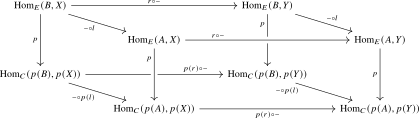

A factorization system specifies two classes of morphisms such that every morphism factors uniquely as a morphism in the first class followed by one in the second. The definition expresses this uniqueness through orthogonality.
Definition 19.1.1 (Orthogonality). Let \(C\) be an \(\infty \)-category. A morphism \(l \colon A \to B\) is said to be left orthogonal to a morphism \(r \colon X \to Y\), written \(l \perp r\), if the following square is a pullback square:
We then also say that \(r\) is right orthogonal to \(l\). Equivalently, for every solid commutative square
the anima of dashed fillers with compatible commutativity identifications for the two triangles is contractible; here compatibility means that pasting the triangles recovers the given square.
Given a collection of morphisms \(S\), we denote by \(S^\perp \) the collection of all morphisms that are right orthogonal to every morphism in \(S\), and by \({}^\perp S\) the collection of those that are left orthogonal to every morphism in \(S\).
Observation 19.1.2. Every morphism \(f\colon X \to Y\) satisfying \(f \perp f\) is an isomorphism in \(C\): the unique dashed filler in the following diagram defines an inverse to \(f\):
Definition 19.1.3 (Factorization system (Joyal), see [Lurie (2009b), Section 5.2.8]). A factorization system on an \(\infty \)-category \(C\) consists of a pair of wide subcategories \((\Ll , \Rr )\) of \(C\) satisfying the following conditions:
- (1)
-
Orthogonality: Every morphism \(l \in \Ll \) is left orthogonal to every morphism \(r \in \Rr \).
- (2)
-
Factorization: Every morphism \(f\) in \(C\) admits a factorization \(f \simeq r \circ l\), where \(l \in \Ll \) and \(r \in \Rr \).
Example 19.1.4. Surjections and injections form a factorization system on \(\Set \). For factorization, we may factor every map through its image. For orthogonality, consider a commutative square with a surjection \(l\colon A\to B\) on the left and an injection \(r\colon X\to Y\) on the right. The map \(A\to X\) is constant on the fibers of \(l\), since its composite with \(r\) factors through \(B\), and hence descends uniquely to a filler \(B\to X\).
Further examples are developed in Chapterexercise 19.1. To study factorization systems, we first record the closure properties of orthogonal classes.
Proposition 19.1.5. Let \(S\) be a collection of morphisms in an \(\infty \)-category \(C\).
- (1)
-
The classes \(S^\perp \) and \({}^\perp S\) are closed under composition and contain all isomorphisms. In particular, they are encoded by wide subcategories of \(C\).
- (2)
-
The classes \(S^\perp \) and \({}^\perp S\) are closed under retracts.
- (3)
-
The class \(S^\perp \) is closed under base change (pullbacks), and \({}^\perp S\) is closed under cobase change (pushouts).
- (4)
-
The class \(S^\perp \) has the left cancellation property: if \(g \circ f,g \in S^\perp \), then \(f \in S^\perp \). Dually, \({}^\perp S\) has the right cancellation property: if \(g \circ f,f \in {}^\perp S\), then \(g \in {}^\perp S\).
- (5)
-
If \(C\) admits small limits, \(S^\perp \) is closed under small limits in \(\Ar (C)\). Dually, if \(C\) admits small colimits, \({}^\perp S\) is closed under small colimits in \(\Ar (C)\).
Proof. These properties all follow from the definition of orthogonality in terms of hom animae. The proofs of (1) and (2) are left to the reader. For (3), consider a pullback square in \(C\) where \(r \in S^\perp \):
For any \(l \colon A \to B\) in \(S\), we must show \(l \perp r'\). This means showing that the left square in the diagram below is a pullback square of animae:
The right square is a pullback because \(\Hom _C(A,-)\) preserves pullbacks, so by the pasting lemma for pullback squares it remains to show that the outer rectangle is a pullback. But this holds as we may rewrite it as the pasting of the square obtained from the original pullback square by applying \(\Hom _C(B,-)\) and the pullback square exhibiting the orthogonality relation \(l \perp r\). The assertion about pushouts is dual.
For (4), consider morphisms \(f\colon X \to Y\) and \(g\colon Y \to Z\) in \(C\), and assume that \(g \circ f\) and \(g\) lie in \(S^{\perp }\). To show that \(f \in S^{\perp }\), let \(l\colon A \to B\) be a morphism in \(S\), and consider the following commutative diagram:
By assumption, the right and outer squares are pullback squares, hence by the pasting law so is the left square. Right cancellation for \({}^\perp S\) follows dually.
For (5), let \(r\) be the limit in \(\Ar (C)\) of a diagram of morphisms \(r_i \in S^\perp \). For any \(l\colon A\to B\) in \(S\), the square defining \(l\perp r\) is the limit of the squares defining \(l\perp r_i\), since \(\Hom _C(A,-)\) and \(\Hom _C(B,-)\) preserve limits. Limits of pullback squares are pullback squares, so \(r\in S^\perp \). The assertion about colimits is dual. □
Proposition 19.1.6. If \((\Ll , \Rr )\) is a factorization system on \(C\), then \(\Ll = {}^\perp \Rr \) and \(\Rr = \Ll ^\perp \).
Proof. By symmetry, it suffices to prove \(\Rr =\Ll ^\perp \). The inclusion \(\Rr \subseteq \Ll ^\perp \) holds by definition. Given \(r\in \Ll ^\perp \), factor it as \(r'l\) with \(l\in \Ll \) and \(r'\in \Rr \). Since \(r\) and \(r'\) lie in \(\Ll ^\perp \), left cancellation gives \(l\in \Ll ^\perp \). Thus \(l\perp l\), so \(l\) is an isomorphism by Observation 19.1.2. As \(\Rr \) contains all isomorphisms and is closed under composition, we obtain \(r\in \Rr \). □
Remark 19.1.7. By combining the previous proposition with Proposition 19.1.5, we conclude that the class \(\Rr \) is automatically closed under retracts, base change, and left cancellation. Similarly, \(\Ll \) is closed under retracts, cobase change, and right cancellation.
In particular, closure under retracts need not be imposed as a separate axiom in the definition of a factorization system.
To express uniqueness of factorizations, let \(\Fact _{\Ll ,\Rr }(C)\) be the full subcategory of \(\Fun ([2],C)\) spanned by diagrams \(X \to Y \to Z\) with first morphism in \(\Ll \) and second in \(\Rr \). Restriction along \(d_1\colon [1]\to [2]\) defines the composition functor \(-\circ -\colon \Fact _{\Ll ,\Rr }(C)\to \Ar (C)\).
Proposition 19.1.8 ([Lurie (2009b), Proposition 5.2.8.17]). Let \(\Ll \) and \(\Rr \) be wide subcategories of an \(\infty \)-category \(C\). Then the following two conditions are equivalent:
- (1)
-
The pair \((\Ll ,\Rr )\) is a factorization system on \(C\).
- (2)
-
The composition functor \(- \circ - \colon \Fact _{\Ll ,\Rr }(C) \to \Ar (C)\) is an equivalence.
Proof. Suppose \((\Ll ,\Rr )\) is a factorization system. Existence of factorizations gives essential surjectivity. For full faithfulness, consider factorizations \((l\colon X\to Z,r\colon Z\to Y)\) and \((l'\colon X'\to Z',r'\colon Z'\to Y')\). We must show that \[ \Hom _{\Fact _{\Ll ,\Rr }(C)}((l,r),(l',r')) \to \Hom _{\Ar (C)}(rl,r'l') \] is an isomorphism. A point of the target is a pair of maps \(a\colon X\to X'\) and \(b\colon Y\to Y'\) together with an identification making the outer rectangle below commute:
By the commutative-square and Segal axioms, the fiber over this point is the fiber of \[ (l^*, r'_*)\colon \Hom _C(Z, Z') \to \Hom _C(X,Z') \times _{\Hom _C(X,Y')} \Hom _C(Z, Y') \] over the pair \((l'a,br)\) with the identification inherited from the outer rectangle. This fiber is contractible since \(l\perp r'\).
Conversely, suppose composition is an equivalence. Essential surjectivity gives the required factorizations. For \(l\colon A\to B\) in \(\Ll \) and \(r\colon X\to Y\) in \(\Rr \), we have \(\Hom _{\Fact _{\Ll ,\Rr }(C)}((l,\id _B),(\id _X,r))\simeq \Hom _C(B,X)\). Under this identification, the map on hom animae is precisely the map defining \(l\perp r\), so full faithfulness gives orthogonality. □
Corollary 19.1.9. Let \((\Ll ,\Rr )\) be a factorization system on \(C\). Then for every morphism \(f\) of \(C\), the fiber of \(\Fact _{\Ll ,\Rr }(C) \to \Ar (C)\) over \(f\) is contractible. □
The inert-active factorization system on an \(\infty \)-operad
We now apply this theory to inert and active morphisms. Recall from Lemma 13.1.16 that for an adequate triple \((C,C_L,C_R)\), the span category contains \(C_L\catop \) and \(C_R\) as the wide subcategories of backwards and forwards maps.
Proposition 19.1.10 (The factorization system on a span category, [Haugseng et al. (2023b), Proposition 4.9]). Let \(\Cc = (C, C_L, C_R)\) be an adequate triple. The pair \((\Ll , \Rr ) = (C_L\catop , C_R)\) forms a factorization system on \(\Span (\Cc )\).
Proof. Any span \(X \xleftarrow {l} U \xrightarrow {r} Y\) can be factored as a backwards map followed by a forwards map: \[ X \xleftarrow {l} U \xrightarrow {\mathrm {id}_U} U \qquad \text {followed by} \qquad U \xleftarrow {\mathrm {id}_U} U \xrightarrow {r} Y. \] For orthogonality, let \(l\colon A\to B\) lie in \(C_L\) and \(r\colon X\to Y\) lie in \(C_R\). Precomposition with the backwards map associated to \(l\) and postcomposition with the forwards map associated to \(r\) give the square
which we must show is a pullback. By Lemma 13.1.13, it identifies with
This is the fiber product, over the constant square \(C^{\simeq }\), of a square with identity horizontal maps and a square with identity vertical maps. Both are pullback squares, so their fiber product is a pullback square as well. □
Remark 19.1.11. The unique filler in a lifting problem in \(\Span (C,C_L,C_R)\) can be visualized directly. A commutative square with a backwards map on the left and a forwards map on the right corresponds to a diagram of spans in \(C\) as follows:
Here the composite span is \(A \leftarrow Z' \rightarrow Y\), computed both as the composite of the spans \(A \xleftarrow {l} B \xrightarrow {\id _B} B\) and \(B \leftarrow Z''\to Y\), as well as the composite of the spans \(A \leftarrow Z \to X\) and \(X \xleftarrow {\id _X} X \xrightarrow {r} Y\). The unique filler span is then given by the span \(B \leftarrow Z' \rightarrow X\).
The factorization system on \(\Span (\Fin )\) lifts to \(\Oo ^{\otimes }\) by the following lemma.
Lemma 19.1.12. Let \((\Ll ,\Rr )\) be a factorization system on an \(\infty \)-category \(C\), and let \(p\colon E\to C\) admit cocartesian lifts of morphisms in \(\Ll \). Then \(E\) has a factorization system \((\Ll _E,\Rr _E)\), where \(\Ll _E\) consists of the \(p\)-cocartesian morphisms over \(\Ll \) and \(\Rr _E\) consists of all morphisms over \(\Rr \).
Proof. Both classes define wide subcategories of \(E\): they contain all isomorphisms, and they are closed under composition because \(\Ll \) and \(\Rr \) are, and because composites of \(p\)-cocartesian morphisms are again \(p\)-cocartesian.
(1) For orthogonality, consider \(l\colon A\to B\) in \(\Ll _E\) and \(r\colon X\to Y\) in \(\Rr _E\). We need to show that the top square in the following commutative cube is a pullback square:

Since \(l\) is \(p\)-cocartesian, the left and right squares are pullback squares, and since \(p(l)\perp p(r)\) the bottom square is a pullback square. The claim thus follows from the pasting law of pullback squares.
(2) For factorization, consider a morphism \(f\colon X\to Z\) in \(E\). Factor \(p(f)\) as \(p(X)\xrightarrow {l}y\xrightarrow {r}p(Z)\) with \(l\in \Ll \) and \(r\in \Rr \), and choose a \(p\)-cocartesian lift \(\widehat {l}\colon X\to Y\) of \(l\). The cocartesian property gives a unique morphism \(\widehat {r}\colon Y\to Z\) over \(r\) with \(f\simeq \widehat {r}\circ \widehat {l}\). Since \(\widehat {l}\in \Ll _E\) and \(\widehat {r}\in \Rr _E\), this is the required factorization. □
Corollary 19.1.13. Let \(\Oo \) be an \(\infty \)-operad. Then the inert and active morphisms define a factorization system on \(\Oo ^{\otimes }\).
Proof. This is an instance of Lemma 19.1.12 applied to the functor \(p_{\Oo }\colon \Oo ^{\otimes } \to \Span (\Fin )\), where we equip the target with the factorization system from Proposition 19.1.10. □
By Corollary 19.1.9, the anima of inert-active factorizations of each morphism in \(\Oo ^{\otimes }\) is therefore contractible, as asserted in Remark 14.1.15.